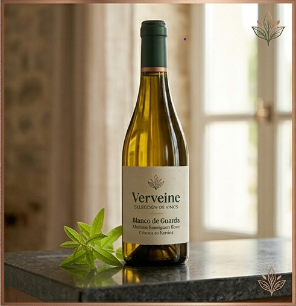
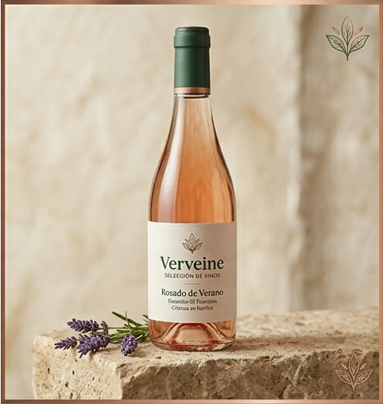
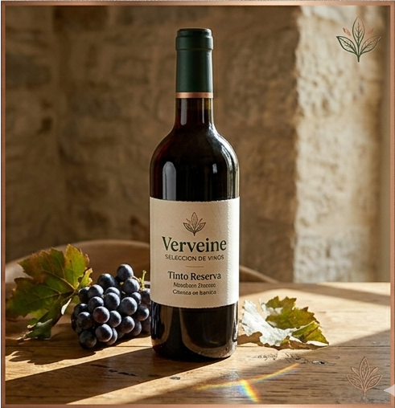

 Blanco de Guarda Albariño con crianza en barrica. Notas cítricas y final mineral. Maridaje: Lubina o Tártaro.
 Rosado de Verano Coral pálido con notas de fresas silvestres y pétalos de rosa. Maridaje: Flores de Calabacín.
 Tinto Reserva 18 meses en roble. Frutos negros, cuero y sutil ahumado. Maridaje: Cordero al Romero.